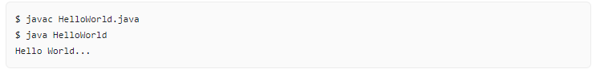

Untuk memulai perjalanan kita bersama Java, mau tak mau Anda memang harus menguasai sebuah hal yang tidak praktis saat pertama kali bertemu dengan Java. Tidak seperti bahasa pemrograman lain yang sederhana untuk memulai hello world yang hanya cukup dengan menggunakan function untuk mencetak sebuah string "Hello World!", di Java Anda harus membuat terlebih dahulu sebuah class dan membuat sebuah method yang merupakan method utama dari kode program. Method utama yang akan dieksekusi tersebut dinamakan dengan method main().Method tersebut wajib ada di salah satu class dari kode program yang kita bangun menggunakan Java.
Karena Java merupakan salah satu bahasa pemrograman yang berparadigma berorientasi objek, Anda memang harus mulai membiasakan diri dengan istilah - istilah seperti inheritance, attribute, instantiation, dan lainnya. Sekarang kita akan memulainya dengan membuat sebuah file yang bernama HelloWorld.java. Kemudian buat kode berikut di dalam file tersebut:
Ada yang perlu Anda perhatikan dari kode diatas:
public adalah sebuah keyword di Java yang menandakan bahwa objek, method, atau atribut dapat diakses dari class lain.
class adalah sebuah keyword di Java yang digunakan untuk membuat sebuah class
static adalah sebuah keyword untuk membuat sebuah method tidak perlu diinstansiasi terlebih dahulu
void adalah sebuah keyword untuk membuat sebuah method tidak me-return nilai apapun alias kosong
System.out.println() adalah sebuah method yang telah di-import otomatis untuk digunakan mencetak output di konsol.
Nama class dan nama file harus sama
Sekarang mari kita jalankan program kecil tersebut dengan menggunakan perintah seperti berikut:
